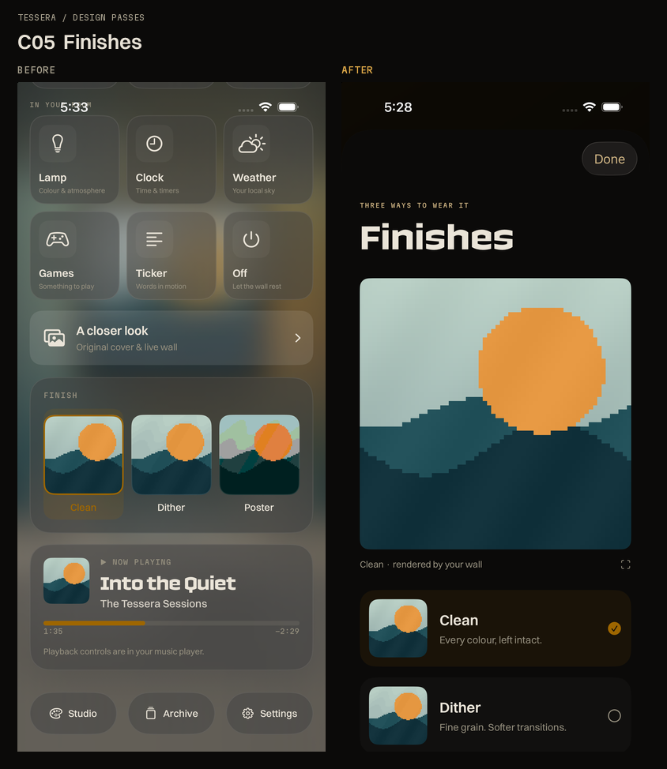

Tessera · Batch 4Tessera · Before & after
Batch 4. Lyrics, Nine, Finishes and Lamp compare their former Room controls with their new detail views. Studio compares the full editor. Screenshots are unretouched; artwork and text are controlled QA fixtures.
C05 · Finishes
